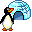

The Office
One igloo per day. Each completed task adds an equal share; finish every task to complete it. Lifetime ranks are separate.
Meet the crew · 8 penguins
More tools

daily igloo complete🌟 milestone ● tasks done 📅 tasks scheduled nothing loggedClick a past or today's day to open its Daily Review. Click a future day (dashed) to schedule tasks for it ahead of time.